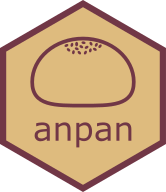

Estimate a species-pathway abundance random effects model
anpan_pwy_ranef.RdFit a model of the form log10_pwy_abd ~ log10_species_abd + (1|pwy) + (0+group|pwy) for a single bug
Usage
anpan_pwy_ranef(
bug_pwy_dat,
group_ind = "crc",
effect_size_threshold = 0.25,
group_exp_rate = 3,
...
)Arguments
- bug_pwy_dat
a data frame with a row for each observation and columns "pwy", "log10_species_abd", "log10_pwy_abd", and a group indicator column named according to the
group_indargument- group_ind
a character giving the name of the column for the 0/1 group indicator variable in
bug_pwy_dat- effect_size_threshold
effect size threshold for hit-calling pathway:group effects
- group_exp_rate
rate parameter of the exponential distribution prior on group effects
- ...
other arguments to pass to cmdstanr::sample()
Details
The priors are as follows: A) student_t(3, mean(log10_pwy_abd), 2.5) on the intercept at the mean species abundance. B) half student_t(3, 0, 2.5) on the residual noise C) 0-centered normal priors on pathway specific effects C1) half student_t(5,0,2.5) on the SD of pathway intercepts C2) half standard normal on the SD of group-specific effects.
The pathway index is generated by converting the pwy column to a factor and then to the corresponding integer index.
The group_ind column should be numeric with values in 0,1
The main parameter of interest are the elements of the pwy_effects parameter. The "hit"
column is defined by selecting the bug:pwy combinations where 1) 98% posterior intervals for
the pwy:group effect exclude 0, 2) the absolute posterior mean exceeds the specified effect
size threshold, and 3) the estimated fixed effect of log10_species_abd on log10_pwy_abd is positive.